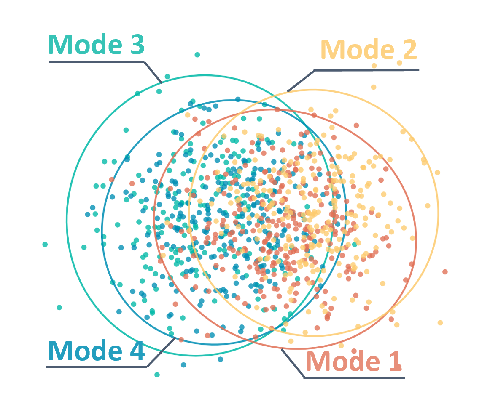
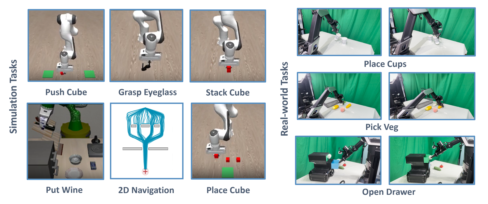
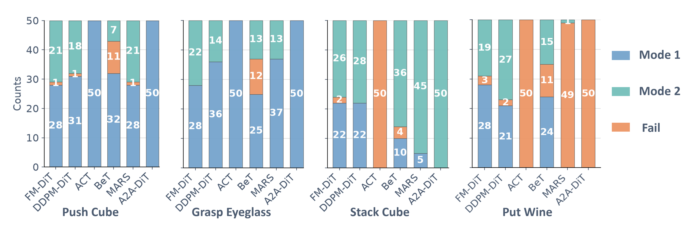
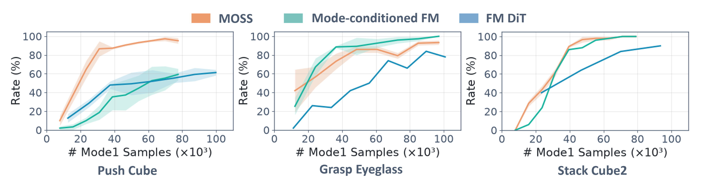
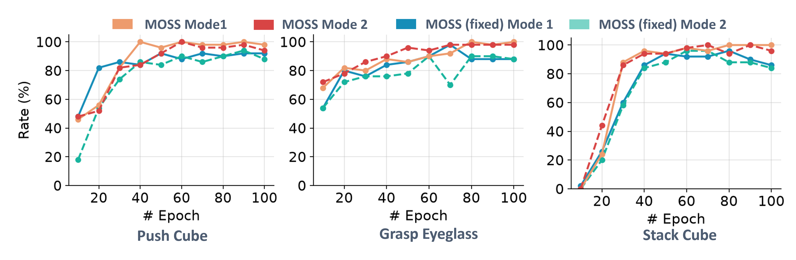

Abstract
In robotic manipulation, the same observation often admits multiple feasible actions. Generative policies such as diffusion and flow matching naturally capture such multimodal behaviors, yet which mode is executed is left to random sampling and cannot be actively controlled. We propose Mode-Oriented Source Shaping (MOSS), which turns mode selection into an explicit choice of where generation starts. We first reveal, both empirically and theoretically, that deterministic flow transport induces mode-dependent structure in the source space. Under ideal deterministic ODE transport, distinct behavioral modes have distinct source-space preimages, while practical approximation errors can blur their boundaries due to imbalanced data, limited model capacity, and few inference steps. Motivated by this source-space structure, MOSS constructs semantically aligned mode-specific Gaussian sources that encode mode identity in the initial noise. A modality-strength estimator predicts the local degree of multimodality, which adaptively controls the geometry of the mode-specific sources. It contracts them toward a shared Gaussian where behaviors are similar and separates them near behavioral branching points. During deployment, the desired behavior is selected at inference simply by sampling from the corresponding component. Across 6 simulated and 3 real-world manipulation tasks, MOSS steers to the target mode up to 100% of the time with high task success, recovers minority modes at over 90% guidance rate under a 10:90 imbalance dataset, and surpasses mode-conditioned flow policy by 43.3 points of guidance rate on real robots.
Key insight
Multimodal Property of Flow Matching
Even with a standard Gaussian source, a flow-matching policy already organizes initial noise by behavioral mode. For a fixed observation, our theory shows that ideal deterministic transport partitions the source space into distinct noise zones, each leading to a particular mode. This structure emerges naturally from the transport itself, without explicit mode conditioning.
Under suitable regularity conditions, these zones also exhibit local stability: small changes to an initial noise sample preserve its resulting mode when the generated action lies sufficiently far from a semantic boundary. This suggests that behavior can, in principle, be selected by choosing where generation starts.

In practice, limited demonstrations, mode imbalance, imperfect learning, and few integration steps weaken this separation. Samples near mode boundaries become sensitive to approximation errors, making the implicit zones difficult to use for reliable control.
Method
Mode-Oriented Source Shaping
MOSS assigns each behavioral mode its own Gaussian source and adapts their separation to the current state. A single shared flow network transforms samples from these sources into actions, making behavior selectable through the initial noise.
Estimate Modality Strength
A lightweight estimator uses observation and action history to predict how strongly future behaviors diverge. It learns from demonstrations by comparing differences across modes with variation within each mode.
Adapt the Source Geometry
Each mode receives a Gaussian source aligned with its characteristic action direction. These sources move closer together when behaviors are similar and farther apart, with less overlap, near behavioral branches.
Select at Inference
At inference, a user or planner selects a mode and samples initial noise from its corresponding source. The shared flow network then generates actions without receiving the mode label as an input.
One Shared Flow NetworkState-Adaptive Source SeparationDirect Selection Across Multiple Modes
Experiments
Tasks

Video Demos
Place Cups
Pick Veg
Open Drawer
Simulation Overview
Main Results
01
Simulation Results
MOSS maintains high guidance and success across simulation tasks.
| Method | Push Cube | Grasp Eyeglasses | Stack Cube | Put Wine | ||||
|---|---|---|---|---|---|---|---|---|
| M1 | M2 | M1 | M2 | M1 | M2 | M1 | M2 | |
| Mode-Cond. FM | 0.86 / 0.96 | 0.94 / 1.00 | 1.00 / 1.00 | 1.00 / 1.00 | 0.96 / 0.96 | 0.94 / 0.94 | 0.92 / 0.92 | 0.94 / 0.96 |
| GMM-Sourced FM | 0.72 / 0.96 | 0.92 / 1.00 | 0.98 / 1.00 | 0.42 / 1.00 | 0.58 / 1.00 | 0.56 / 1.00 | 0.94 / 0.94 | 0.80 / 0.94 |
| MOSS | 0.99 / 0.99 | 1.00 / 1.00 | 1.00 / 1.00 | 1.00 / 1.00 | 0.98 / 0.98 | 0.96 / 0.96 | 0.92 / 0.94 | 0.86 / 0.94 |

02
Real-World Results
Direct conditioning collapses on one requested mode in Pick Veg and Open Drawer, while MOSS retains control of both modes under visual and execution variability.
| Task | Method | SR | GR₁ | GR₂ |
|---|---|---|---|---|
| Place Cups | FM-DiT | 0.70 | — | — |
| Mode-Cond. FM | 0.70 | 0.15 | 0.85 | |
| MOSS | 0.98 | 0.95 | 1.00 | |
| Pick Veg | FM-DiT | 0.60 | — | — |
| Mode-Cond. FM | 0.65 | 0.00 | 0.60 | |
| MOSS | 0.75 | 0.80 | 0.65 | |
| Open Drawer | FM-DiT | 0.75 | — | — |
| Mode-Cond. FM | 0.85 | 0.85 | 0.00 | |
| MOSS | 0.83 | 0.90 | 0.75 |
03
Robustness and Training Efficiency
With 10:90 imbalanced demonstrations, MOSS rapidly recovers the requested minority behavior by reusing shared motion structure in robotic data.

04
Ablation Studies
Adaptive source shaping reaches consistently high guidance rates and remains more stable than fixed separation.

Citation
BibTeX
@misc{ma2026mossmodeorientedsourceshaping,
title={MOSS: Mode-Oriented Source Shaping for Robot Flow Matching Policies},
author={Zirun Ma and Jindou Jia and Tuo An and Jiaqi Bai and Jiahua Dong and Jianfei Yang},
year={2026},
archivePrefix={arXiv}
}